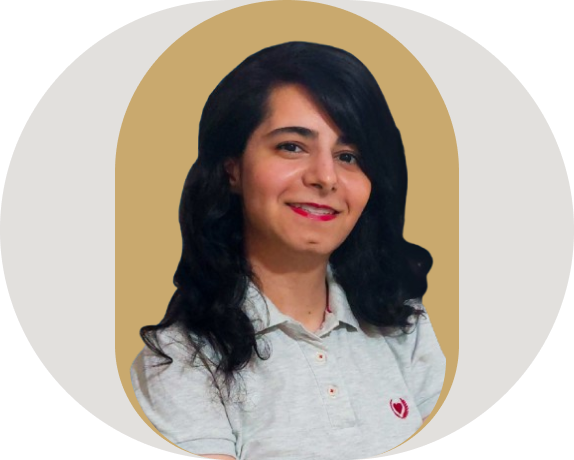
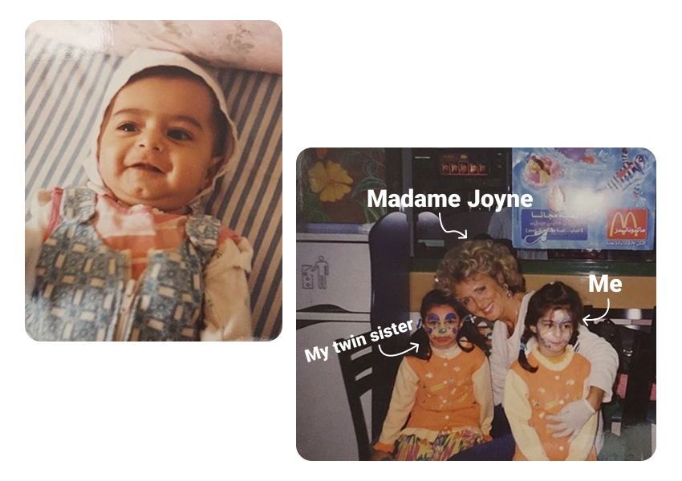
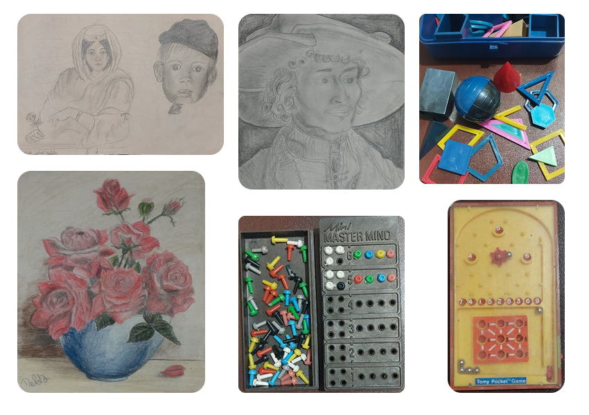
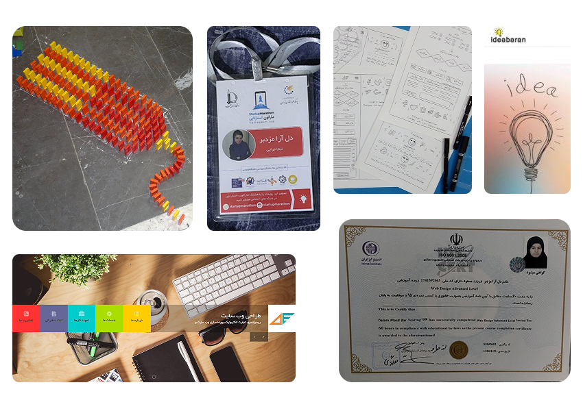
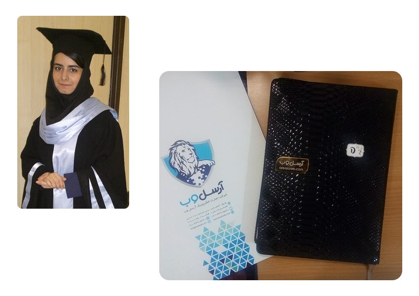
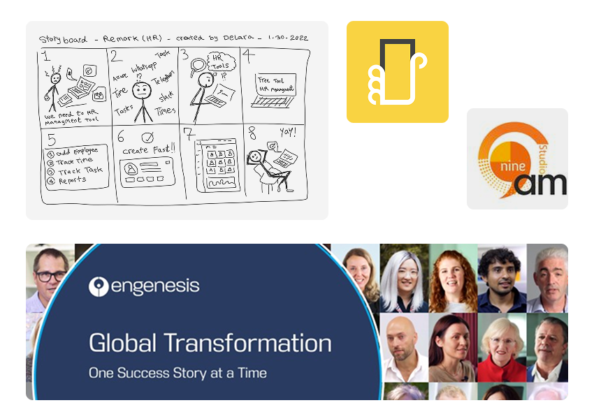
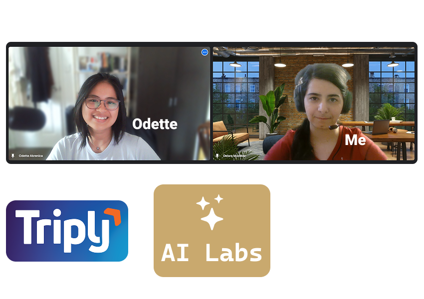
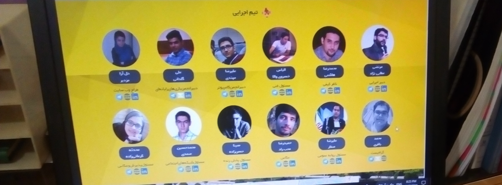
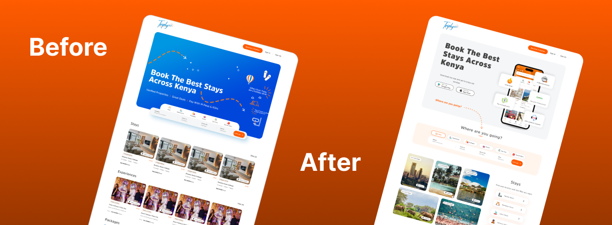

About me
I've spent 10+ years at the intersection of code and canvas — and I still get excited by a good idea.
I'm Delara, a Senior Product Designer based in Iran, open to global opportunities. My path started with analog art, evolved through frontend code, UX research, and international product teams — and that full-stack perspective shapes every design decision I make.
The journey
From code to canvas
I grew up surrounded by art. My mother was always creating artwork, so I constantly witnessed different forms of art at home. An artistic spirit has always lived within me — and it eventually found its way into technology.
Early years — Discovering the world
I was born in Ahvaz, Iran, into a home filled with my mother's art — the smell of glue, vibrant beads, crafting tools everywhere. I was too young to create; I was busy discovering. At six, life took our family to Qatar, where I attended my first year of school — new language, new faces, new world. A year and a half later, we returned to Iran, and I finished first grade in Tehran before coming home to Ahvaz.

Learning through media & logic
I learned to draw and paint from my mother, my first teacher. Around the same time, satellite TV — especially German channels like Super RTL — sparked a fascination with structure, strategy, and problem-solving, even in a language I didn't yet understand. Off-screen, I spent hours with puzzles like Mastermind and tactical games, unknowingly training my mind in logic and geometry. This dual love for art and systems naturally led me to prepare for university entrance exams in both Mathematical Sciences and Art.

The Front-end era begins
My professional journey began in 2015 with an Advanced Web Design certification in HTML and CSS. Over the next three years, I took on a mix of freelance and studio work — including about two years managing and designing the Dual Engineers Studio website, running my own portfolio site, and spending six months curating startup content for IdeaBaran. I also volunteered as a Front-end Developer at the Ferdowsi University of Mashhad's startup marathon in 2016. This period shaped me into the digital generalist I am today — part designer, part storyteller, always curious.

From code to UX
At Arsalweb (2018–2020) I evolved from Frontend Developer to Digital Marketer to UX Designer — creating user flows, wireframes, and prototypes for B2B, B2C, and C2C projects, including a Ramadan food-ordering campaign that broke user engagement records. I graduated from Shiraz University in February 2019, freelanced as a UI/UX Designer on Ponisha, designed at 9 Sobh Studio, and in September 2020 joined Apsaaz as a User Experience Designer.

Design leadership & going global
I continued at Apsaaz until February 2022 — leading UX initiatives, hiring and training junior designers, and learning that great design is also about great collaboration. In May 2022 I went international, joining Engenesis in Sydney: designing end-to-end UX/UI flows and building reusable component systems with developers across time zones, through March 2024.

Triply, AI Labs & what's next
From May 2024 to February 2026 I designed for Triply in Nairobi — revamping interfaces, building design systems, and shipping product features for an Africa-focused travel platform. Alongside, I explored Human-AI Co-Creation research in AI Labs. Now I'm planning my next chapter — actively looking for my next senior product design role or graduate research in HCI.

What I bring
An engineering mindset in a designer's hands
Bridging the Gap
Because I started as a developer, I speak the language of engineering. This significantly reduces handoff friction and ensures my designs are always production-ready.
Strategic Design Systems
I build scalable systems for consistency and speed — from token architecture to reusable component libraries that teams actually use.
Proficient in HTML/CSS — this entire portfolio was hand-coded by me and deployed on GitHub Pages.
Social proof
What others say
Social impact
Design that gives back
Not all meaningful work comes with a paycheck. These are two projects I chose to take on — one through a handshake agreement, one through a voluntary contract where payment was optional at the client's discretion. I believe senior design skills carry a responsibility to be applied where they matter, not only where they pay.

Frontend Web Developer — Ferdowsi University of Mashhad
Contributed as a volunteer Frontend Web Developer for a startup marathon conference, designing web interfaces using HTML, CSS, and Bootstrap under the supervision of the university's Science and Technology Park. No formal contract — carried out through a direct agreement with the executive director.
View on Instagram →UI/UX Designer — Triply.co
Improved the existing UI and designed new interfaces for an Africa-focused travel booking platform, enhancing usability and visual appeal for travelers and travel businesses. Worked under a voluntary cooperation contract — payment was entirely at the client's discretion.
View on LinkedIn →
Beyond the grid
What keeps me curious
When I'm not deep in user flows or design tokens, I find structural balance in Persian literature — discovering in Rumi's poetry the same geometry that governs great design: rhythm, restraint, and meaning in every space. I'm also a lifelong collector of ideas — from creative advertising to startup concepts — because the best designers never stop being curious.
Want to work together or just talk design?
Let's Talk